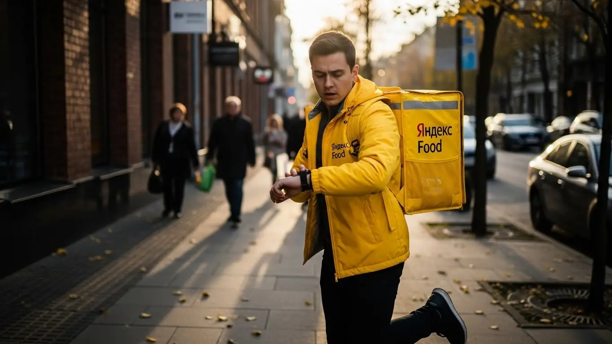
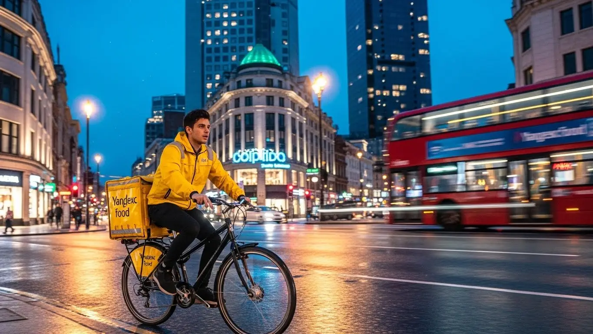
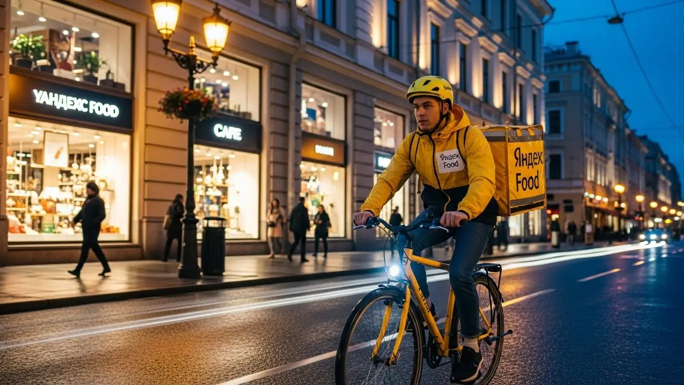

Работа курьером Яндекс Еда в Челябинске в 2025-2026: доход и условия
- Работа курьером Яндекс Еды в Челябинске: для кого эта вакансия и что вы получите
- Сколько вы будете зарабатывать курьером в Челябинске: калькулятор дохода и разбор выплат
- Реальный заработок курьера в Челябинске: смены и месячный доход
- График работы и форматы занятости
- Требования к кандидату и документы
- Самозанятость, налоги и юридическая чистота
- Пошаговое оформление и первый выход на линию в Челябинске
- Пешком, на вело или на авто: что выгоднее в Челябинске
- Районы, маршруты и «топовые» зоны заказов в Челябинске
- Безопасность, страховка, штрафы и оплата простоя
- Плюсы и возможные минусы работы курьером в Челябинске
- Реальные истории и отзывы курьеров из Челябинска
- Ответы на главные вопросы о работе курьером Яндекс Еды в Челябинске
- Короткие ответы на главные вопросы
- Заключение: твой следующий шаг в Челябинске
Все города
Думаешь, работа курьером в Челябинске — это просто сел на велик и поехал рубить бабло? А как насчет пробок на проспекте Ленина в час пик, заказов в промзону ЧТЗ или убийства подвески на дорогах Металлургического района? Я вижу десятки новичков, которые ведутся на красивые цифры в рекламе, а потом сливаются, столкнувшись с реальностью. Этот гайд — не реклама. Это честный разговор о том, как на самом деле устроена работа курьером Яндекс Еда и Лавки в нашем суровом, но денежном Челябинске.
Поверь, разница между тем, кто зарабатывает 3000 в день, и тем, кто едва отбивает бензин, — не в скорости, а в голове. Нужно понимать, что твой чистый доход — это не просто сумма за заказы. Из неё нужно вычесть налог самозанятого, расходы на транспорт, а главное — учесть, что рейтинг и приоритет решают всё. Если ты хочешь заранее оценить потенциальный заработок и увидеть все условия, то подробная информация про работу курьером Яндекс Еда в Челябинске доступна на официальной странице, где есть калькулятор и форма заявки. Не зная, какие районы на Северо-Западе дают стабильный поток, а где в центре можно застрять на час из-за парковки, ты будешь просто кататься вхолостую, теряя и время, и деньги.
Здесь я разложу всё по полочкам. Мы честно посчитаем, сколько реально можно заработать пешком, на велосипеде и на авто с учётом челябинских реалий. Разберём, в каких районах самый высокий спрос и жирные заказы, а куда лучше не соваться. Выясним, как погода — от уральского мороза до летней жары — влияет на доход и как к этому подготовиться. Я покажу на примерах, за что прилетают штрафы и как их избежать, и сравним условия Яндекса с другими доставками, которые работают у нас в городе.
Меня зовут Алексей. Я сам начинал с нуля, намотал тысячи километров по Челябинску с желтой сумкой, а сейчас у меня свой небольшой таксопарк-партнёр. Я знаю эту кухню от и до — и со стороны курьера, и со стороны партнёра сервиса. Так что забудь про рекламную шелуху. Сейчас всё разложу по полочкам, как старший брат, который не хочет, чтобы ты наступал на те же грабли. Начнём с главного: на чём ты собираешься работать и сколько это принесёт денег.
Чтобы тебе было проще сориентироваться в ключевых темах, я подготовил небольшой навигатор по статье.
Что ты точно узнаешь из этого разбора по Челябинску
В этой статье ты ТОЧНО узнаешь:
- Сколько реально можно заработать в Челябинске за смену пешком, на велосипеде и на авто?
- В каких районах — от Северо-Запада до центра — больше всего заказов и выше коэффициенты?
- Как использовать уральскую погоду, пиковые часы и «фиолетовые зоны» в приложении, чтобы зарабатывать больше?
- За что на самом деле штрафуют и снижают рейтинг, и как этого избежать?
- Что такое самозанятость, как её оформить за 10 минут и сколько налогов придётся платить?
- Какой транспорт выгоднее выбрать для старта в Челябинске и что нужно, чтобы выйти на линию уже завтра?
А если тебе некогда читать всю статью — переходи сразу к заключению, где ты найдёшь короткие ответы на все эти вопросы и указания, в каких разделах искать подробности.
А для начала — наглядная инфографика с основными цифрами по работе курьером в Челябинске.
Работа курьером в Челябинске: ключевые цифры
Работа курьером Яндекс Еды в Челябинске: для кого эта вакансия и что вы получите
Кому подойдёт эта работа в Челябинске
Давай начистоту: эта работа не для всех, но для многих она — настоящая находка. В первую очередь, это идеальная подработка для студентов, например, из ЮУрГУ или ЧелГУ. Можно легко совмещать с учёбой: откатал пару часов после пар — и вот у тебя уже есть деньги на свои расходы. Главные плюсы — никаких начальников, стоящих над душой, и свободный график вместо жёстких рамок с девяти до шести.
Также это отличный старт для тех, у кого пока нет опыта работы. Здесь не смотрят на диплом или прошлые заслуги, важно только твоё желание работать и наличие смартфона. Если тебе нужен дополнительный доход к основной зарплате, это тоже прекрасный вариант. Вышел на линию вечером или в выходные, покрутил педали или руль пару-тройку часов — получил живые деньги. Ну и, конечно, это работа для тех, кто ценит свободу и быстрые выплаты: заработал сегодня — получил сегодня.
Главные преимущества для жителей районов Калининский, Курчатовский, Центральный
Главный плюс этой работы в Челябинске — возможность не мотаться через весь город. Если ты живёшь, скажем, в Калининском районе, на Северо-Западе, то можешь спокойно брать заказы в своей же локации. Там полно и ресторанов, и магазинов, и жилых комплексов. Тебе не придётся тратить час на дорогу до «работы» и час обратно. Просто выходишь из дома, включаешь приложение «Яндекс Про» и начинаешь зарабатывать.
То же самое касается жителей Курчатовского или Центрального районов. В центре всегда кипит жизнь: куча кафе на Кировке, бизнес-центры, офисы — заказов хватает. А в спальных районах люди постоянно заказывают еду и продукты домой. Ты работаешь на знакомой территории, знаешь все короткие пути и дворы, что сильно экономит время и нервы. По сути, твой район становится твоим офисом под открытым небом, а приложение помогает выбрать самые выгодные зоны.

Краткое обещание по доходу и условиям
Если говорить о деньгах, то в Челябинске цифры вполне реальные. При частичной занятости, работая по 3–4 часа в день, можно спокойно делать 1500–2000 рублей. Если же рассматривать это как основную работу и выходить на линию на полный день (8–10 часов), то доход автокурьера может доходить и до 4000–5000 рублей за смену. В месяц при полной занятости активные ребята зарабатывают от 60 000 до 90 000 рублей и даже больше.
Самое важное — ежедневные выплаты приходят на карту. Не нужно ждать аванса и зарплаты, что очень удобно. График ты строишь сам: хочешь — работай каждый день, хочешь — только по выходным. Никакого опыта не требуется, всему научат на коротком онлайн-инструктаже. Всё, что нужно для старта, — это желание, смартфон, возраст от 18 лет и статус самозанятого, который оформляется онлайн за 10 минут.
Сколько вы будете зарабатывать курьером в Челябинске: калькулятор дохода и разбор выплат
Из чего складывается доход курьера
Твой заработок — это не просто фиксированная ставка, а конструктор из нескольких частей. Во-первых, есть базовая оплата за каждый выполненный заказ. Во-вторых, к ней добавляется доплата за расстояние — чем дальше везти, тем больше денег. В-третьих, в часы пик (обед, ужин), в выходные или в плохую погоду включаются повышающие коэффициенты. Карта в приложении окрашивается в яркие цвета, и стоимость каждого заказа может вырасти в полтора-два раза.
Кроме этого, есть бонусы за выполнение определённого количества заказов и щедрые чаевые от клиентов — они полностью твои. Важный момент, который есть не везде: оплата простоя, если ты приехал в ресторан, а заказ ещё не готов. Для пеших курьеров также возможна компенсация проезда на общественном транспорте. Вся система выплат прозрачна, а все начисления видны в приложении «Яндекс Про».
Как пользоваться калькулятором дохода
Чтобы прикинуть свой возможный заработок, не нужно гадать. В специальном калькуляторе на сайте ты можешь выбрать несколько простых параметров. Сначала указываешь свой город — Челябинск. Затем выбираешь, как планируешь доставлять: пешком, на велосипеде или на своём автомобиле.
Далее выставляешь, сколько часов в день и сколько дней в неделю готов работать. Например, 4 часа 5 дней в неделю как подработку или 8 часов 6 дней в неделю для полной занятости. На выходе калькулятор покажет примерный диапазон твоего дохода за день и за месяц. Это не стопроцентная гарантия, но очень хороший ориентир, чтобы понять, на какие цифры можно рассчитывать в нашем городе.
Прикинь свой примерный доход в Челябинске
8 часов
5 дней
Примерный доход в месяц:
Расчет является ориентировочным и не учитывает бонусы, чаевые и расходы. Реальный заработок зависит от спроса и вашего рейтинга.
Чтобы увидеть более точные цифры и сразу подать заявку, загляни на страницу про работу курьером Яндекс Еда в твоём городе — там есть и калькулятор, и все актуальные условия.
Примеры расчёта для пешего, вело- и авто‑курьера в Челябинске
Давай на конкретных примерах. Пеший курьер, работающий в центре Челябинска, в районе проспекта Ленина, за 6-часовую смену в субботу может заработать около 2000–2500 рублей. Заказы там короткие, ресторанов много, поэтому далеко ходить не придётся.
Велокурьер, который катается по спальным районам, например, между Курчатовским и Калининским, за полный 8-часовой день сделает больше — примерно 2800–3500 рублей. Он быстрее пешего, покрывает большие расстояния и может брать заказы как из кафе, так и из гипермаркетов вроде «Ленты» или «Ашана».
Курьер на своем автомобиле — это уже другой уровень. Он может работать по всему городу, брать дальние заказы в Металлургический район или даже в пригород. В плохую погоду, когда коэффициенты максимальные, его доход за 10-часовую смену может составить 4500–5500 рублей. Конечно, из этой суммы нужно вычесть расходы на бензин, но всё равно зарплата получается очень достойной.
Реальный заработок курьера в Челябинске: смены и месячный доход
Давай сразу к главному — к деньгам. Никаких «до 150 тысяч», а честные цифры, которые ты будешь видеть на своём балансе в Челябинске. Заработок курьера — это не фиксированная зарплата, а результат твоей активности, смекалки и умения оказываться в нужном месте в нужное время. Сумма напрямую зависит от того, как ты работаешь: на подработке по вечерам или полный день, пешком или на машине.
Я всегда говорю новичкам: не смотри на рекорды других, смотри на средние цифры и думай, как их превзойти. В Челябинске есть свои особенности: город большой, районы сильно отличаются по плотности застройки и трафику. Поэтому доход пешего курьера в центре и автокурьера, который мотается между Северо-Западом и Ленинским, будет разным. Но система прозрачна: больше выполненных заказов в Яндекс Еде и Доставке — больше денег.
Диапазон дохода для подработки и полной занятости
Если ты ищешь подработку на 2–4 часа в день, например, после учёбы или основной работы, цифры будут примерно такие. Пеший курьер в центре за короткую смену может сделать 800–1500 рублей. Велокурьер за то же время заработает больше, около 1000–1800 рублей, так как успевает выполнить больше заказов на средние дистанции. Автокурьер на подработке в вечерний пик может рассчитывать на 1500–2500 рублей, особенно если берёт заказы из Яндекс Доставки. В месяц такая подработка приносит от 15 000 до 35 000 рублей.
При полной занятости, когда ты на линии 8–10 часов, доход совсем другой. Пеший курьер, работая в плотной застройке вроде центральных улиц, может зарабатывать 2000–3000 рублей в день. Велосипедист, который активно катается по спальным районам, — 2500–4000 рублей. Самый высокий потенциальный доход у автокурьера: 3500–5500 рублей в день и выше. Соответственно, месячный заработок при полной занятости у пешего курьера составит 45–65 тысяч, у вело — 55–85 тысяч, а у водителя — от 70 до 110 тысяч рублей до вычета расходов на бензин.
Как район, время суток и погода влияют на доход
Запомни три кита высокого заработка: пиковые часы, плохая погода и «жирные» районы. В Челябинске пик заказов — это обеденное время с 12:00 до 14:00 и вечер с 18:00 до 21:00. В пятницу вечером и все выходные спрос стабильно высокий. В это время в приложении «Яндекс Про» карта окрашивается в фиолетовый цвет — это зоны с повышенными коэффициентами. Заказ, который обычно стоит 150 рублей, с коэффициентом х2 принесёт тебе уже 300.
Уральская погода — твой лучший друг. Как только начинается дождь, снегопад или сильный мороз, количество курьеров на линии уменьшается, а число заказов растёт в разы. Коэффициенты взлетают, а клиенты становятся щедрее на чаевые. Работать в таких условиях тяжелее, но финансово это самые выгодные смены.
Что касается районов, то в центре вокруг Кировки и проспекта Ленина всегда много заказов из ресторанов и кафе через Яндекс Еду. Вечером спрос смещается в спальные районы: Северо-Западный, Калининский, Тракторозаводский. Изучай карту спроса в приложении, она твой главный навигатор к деньгам.

Советы по увеличению заработка от опытных курьеров
Первый совет — планируй свои смены. Не выходи на линию хаотично. Заранее бронируй плановые слоты в приложении на самое выгодное время — вечера пятницы и выходные. Такие слоты дают приоритет в распределении заказов. Во-вторых, будь мобильным. Если видишь, что в твоей зоне заказов мало, а в соседней горит высокий коэффициент, не ленись переместиться туда. Иногда 15 минут пешком или на автобусе окупаются двойным тарифом.
В-третьих, сочетай форматы. Если у тебя есть и велосипед, и машина, используй их по ситуации. В хорошую погоду и в часы пик в центре велосипед будет быстрее и выгоднее. А когда идёт снег или нужно развозить заказы по всему городу, садись за руль. И не брезгуй мультизаказами (когда берёшь сразу несколько доставок по пути) — это отличный способ повысить свой доход в час без лишнего пробега. Главное — не путать адреса и быть внимательным.
Вот реальный кейс от одного из моих водителей. Парень начинал на велосипеде, работал по вечерам в районе ЧТЗ. В среднем выходило 1200–1500 рублей за 4 часа. Потом он заметил, что в сильный снегопад в его районе почти нет курьеров, а коэффициенты х2.5. В такую погоду он стал выходить на линию на своей старенькой «девятке», просто доставляя заказы тем, кто не хотел выходить из дома. За те же 4 часа он начал делать по 3000–3500 рублей. Так он нашёл свою нишу и использует её на 100%.
Сравнение примерного дохода в Челябинске по типам курьеров
| Параметр | Пеший курьер | Велокурьер | Автокурьер |
|---|---|---|---|
| Средний доход в час (пик) | 350–500 ₽ | 450–650 ₽ | 500–800 ₽ |
| Доход за смену (подработка, 4ч) | 800–1500 ₽ | 1000–1800 ₽ | 1500–2500 ₽ |
| Доход за смену (полный день, 8-10ч) | 2000–3000 ₽ | 2500–4000 ₽ | 3500–5500 ₽* |
| Месячный доход (полная занятость) | 45 000–65 000 ₽ | 55 000–85 000 ₽ | 70 000–110 000 ₽* |
| Примечание | Идеален для центра | Оптимален для спальных районов | Максимальный охват, но есть расходы на топливо |
*До вычета расходов на топливо, амортизацию и налога для самозанятых.
В итоге, твой реальный заработок в Челябинске зависит не от удачи, а от твоего подхода. Анализируй спрос, используй погоду в свою пользу и не бойся менять локации. Самый главный совет: относись к этому как к своему небольшому бизнесу, где ты сам планируешь стратегию и получаешь всю прибыль.
График работы и форматы занятости
Главное преимущество этой работы — свобода. Ты сам решаешь, когда и сколько работать. Это не просто красивые слова из рекламы, а реальный инструмент, который позволяет вписать доставку в любой образ жизни. Хочешь — выходи на пару часов вечером, чтобы заработать на карманные расходы. А хочешь — работай полный день и получай доход на уровне средней офисной зарплаты в Челябинске, только без начальника и строгого расписания. А благодаря ежедневным выплатам деньги приходят на карту сразу, а не раз в месяц.
Эта гибкость особенно важна для студентов, которым нужно совмещать работу с парами, или для тех, у кого уже есть основная работа. Система слотов в приложении «Яндекс Про» позволяет заранее спланировать свою неделю или же выходить на линию спонтанно, когда появилось свободное время и есть хороший спрос. Никто не будет стоять над душой и требовать отработать 8 часов от звонка до звонка.
Подработка после учёбы или основной работы
Совмещать доставку с другими делами проще простого. Вот пара реальных примеров. У меня есть знакомый студент из ЮУрГУ, живёт в общежитии. Он берёт пешие слоты по 3-4 часа после пар, примерно с 18:00 до 22:00. Работает прямо в районе университета и на Северо-Западе, разносит заказы из кафе и ресторанов в сервисе Яндекс Еда. В будни делает по 800-1200 рублей, а в выходные выходит на более длинную смену. В месяц у него набегает 20-25 тысяч, чего вполне хватает на жизнь.
Другой пример — менеджер, который работает в офисе до шести вечера. У него есть машина, и он три-четыре раза в неделю включает тарифы Яндекс Доставки по вечерам и в субботу. Он не возит еду, а доставляет посылки, документы, заказы из магазинов. Для него это способ отвлечься от основной работы, послушать музыку и заработать дополнительные 15-20 тысяч в месяц, которые он откладывает на отпуск. График он строит сам: устал — не вышел на линию, есть силы и желание — поработал пару часов.
Полная занятость: как выглядит типичный день курьера
Если ты решил сделать доставку своей основной работой, твой день будет более структурированным. Типичный день курьера на полной занятости в Челябинске выглядит так. Выход на линию около 10-11 утра, когда начинают поступать первые заказы из магазинов и Яндекс Лавки. Первые пару часов работаешь в спокойном темпе, выбирая зону поближе к центру.
С 12:00 начинается обеденный пик, который длится до 15:00. В это время заказы идут один за другим, главное — успевать. После пика наступает небольшое затишье, с 15:30 до 17:30. Это время можно использовать для обеда, отдыха или перемещения в крупный спальный район, например, в Курчатовский или Калининский, чтобы быть готовым к вечернему наплыву. С 18:00 и до 21:00 — самый денежный период. Заказы из ресторанов, высокий спрос, хорошие коэффициенты. После 21:00 поток спадает, и можно спокойно завершить смену, выполнив несколько последних заказов из продуктовых магазинов.
Как планировать слоты и выходы через приложение «Яндекс Про»
Приложение «Яндекс Про» — твой главный рабочий инструмент. В нём ты не только принимаешь заказы, но и планируешь свой график. Есть два формата работы: свободные выходы и плановые слоты. Свободный выход — это когда ты просто нажимаешь кнопку «На линию» в любое время. Плановые слоты ты бронируешь заранее на определённое время и в определённом районе. У слотов есть преимущество: сервис даёт тебе приоритет в заказах, а иногда и гарантирует минимальный доход за час, даже если заказов будет мало.
Чтобы зарабатывать стабильно, важно научиться пользоваться картой спроса. Она в реальном времени показывает зоны с повышенными коэффициентами. Видишь «фиолетовую» зону — двигайся туда. Также крайне важна пунктуальность. Если ты записался на слот с 18:00, будь в выбранной зоне ровно в это время. Опоздания и частые отмены слотов негативно влияют на твой рейтинг Активности. А чем выше твой рейтинг, тем больше у тебя преимуществ, включая доступ к лучшим заказам.
Один из моих самых толковых автокурьеров работает по чёткой схеме. В воскресенье вечером он открывает «Яндекс Про» и бронирует себе самые «жирные» слоты на неделю вперёд: обеды и вечера. Утром в понедельник он смотрит прогноз погоды. Если обещают дождь, он отменяет утренний слот и берёт более длинный вечерний, зная, что заработает больше. Такой подход позволяет ему стабильно привозить по 80-90 тысяч в месяц, работая по 5-6 дней в неделю.
В общем, гибкий график — это не анархия, а возможность строить работу под себя. Используй приложение для планирования, будь дисциплинированным, и тогда сможешь выжать из свободного графика максимум. Главный совет: не ленись заглядывать в расписание слотов и на карту спроса — именно там находятся твои деньги.

Требования к кандидату и документы
Многих новичков пугает, что для работы курьером в Яндекс Еде или Доставке нужны особые навыки или кипа бумаг. На деле всё гораздо проще: начать можно без опыта, требования минимальные, а пакет документов — стандартный. Главная цель сервиса — не отсеять кандидатов, а убедиться, что ты совершеннолетний, можешь нести ответственность за заказы и легально получать доход. Вся система построена так, чтобы ты мог быстро оформиться и выйти на линию, а не бегать по инстанциям.
Из практики: у меня был парень, студент-первокурсник из Магнитогорска, недавно переехавший в Челябинск. Он думал, что без местной прописки и с учебной загрузкой оформление затянется на недели. На деле же он зашёл на Госуслуги, за минуту нашёл свой ИНН, оформил виртуальную карту в приложении банка и на следующий день уже пришёл за термокоробом. Вся «бюрократия» заняла у него меньше часа, не выходя из общежития.
Возраст, гражданство и базовые условия
Давай по порядку разберёмся, какие условия работы и что от тебя потребуется.
Первое и самое главное — возраст. Строго с 18 лет. Исключений нет, так как работа курьером предполагает материальную ответственность и оформление в статусе самозанятого, что по закону доступно только с совершеннолетия.
Второе — гражданство. Работать в сервисах Яндекса могут граждане РФ, а также граждане стран ЕАЭС (Армения, Беларусь, Казахстан, Кыргызстан). Понадобится паспорт и документы, подтверждающие легальное пребывание и право на работу.
И последнее — физическая форма. Не нужно быть мастером спорта, но важно понимать, что это активная работа. Если ты пеший курьер, будь готов много ходить. Велокурьер должен уверенно чувствовать себя на велосипеде в городском потоке. А для курьера на автомобиле главное — стаж вождения и знание ПДД.
Какие документы нужны для работы курьером
Список документов для оформления короткий, и собрать их можно за один день. Вот что тебе понадобится:
- Паспорт. Основной документ, удостоверяющий личность. Он нужен для регистрации в приложении Яндекс Про и оформления самозанятости.
- ИНН (Идентификационный номер налогоплательщика). Необходим для регистрации в качестве самозанятого и уплаты налога. Если не помнишь свой номер, его можно за пару минут бесплатно узнать на сайте ФНС по паспортным данным.
- Банковская карта. Нужна личная дебетовая карта любого российского банка на твоё имя. Именно на неё будут приходить ежедневные выплаты за выполненные заказы. Карты родственников или друзей не подойдут.
- Медицинская книжка. Для доставки заказов из ресторанов в Яндекс Еде она обязательна. Если же ты планируешь работать только в Яндекс Доставке (посылки, товары из магазинов), она может не понадобиться. Рекомендую уточнить актуальные требования при регистрации, но лучше оформить её заранее в любом медцентре Челябинска — это расширит количество доступных заказов.
Можно ли работать с 16 лет и какие есть альтернативы
Частый вопрос от молодых ребят: можно ли устроиться в Яндекс Еду с 16 лет? Отвечаю честно — нет. Минимальный возраст для сотрудничества с сервисом — 18 лет. Это связано с юридическими тонкостями: оформлением самозанятости, полной материальной ответственностью за заказы и необходимостью работать в любое время, а не только в разрешённые для подростков часы.
Какие тогда есть варианты подработки для 16–17-летних в Челябинске? Можно рассмотреть более простые форматы, где не требуется такая ответственность: раздача листовок у ТРЦ «Алмаз» или «Родник», работа промоутером, помощь в кофейнях на летних верандах. Конечно, это не тот уровень дохода и свободы, который даёт работа курьером со свободным графиком, но как временный вариант для первого опыта — вполне подойдёт. А как только исполнится 18, сможешь быстро стать курьером Яндекса.
В итоге, требования к кандидатам простые и понятные: возраст от 18 лет, гражданство РФ или ЕАЭС и базовый пакет документов. Никаких подводных камней. Мой совет: перед заполнением анкеты в Яндекс Про проверь, все ли документы под рукой, и заранее узнай свой ИНН. Так процесс регистрации пройдёт максимально гладко и быстро.
Самозанятость, налоги и юридическая чистота
Многих отпугивают слова «самозанятость» и «налоги». Кажется, что оформление — это сложно, муторно и связано с бумажной волокитой. На самом деле, это самый простой и современный способ работать на себя и получать официальный доход. Забудьте про бухгалтеров, отчёты и поездки в налоговую. Весь процесс занимает 10 минут в телефоне и дальше работает автоматически. Это куда безопаснее и выгоднее, чем зарплата «в конверте».
У меня в таксопарке работает водитель, ему под 60, всю жизнь отработал на ЧТЗ. Когда я предложил ему подключиться к доставке как самозанятому, он долго отнекивался: «Лёш, какая самозанятость, я в этих ваших интернетах ничего не понимаю». В итоге мы сели, скачали приложение «Мой налог», он сам отсканировал паспорт, сделал фото — и через 5 минут регистрация была готова. Теперь он самый ярый сторонник этой системы. Говорит, что впервые видит свой доход полностью «белым» и спокоен, что всё легально.
Почему курьеры Яндекс Еды работают как самозанятые
Сотрудничество через самозанятость — это формат, выгодный и для тебя, и для Яндекса. Официально это называется «налог на профессиональный доход» (НПД). По сути, ты получаешь статус фрилансера, который официально оказывает услуги крупной компании. Ты не в штате, у тебя нет начальника, но при этом твой доход полностью легален.
Главные плюсы для тебя как для курьера:
- Официальный доход. Ты можешь легко подтвердить заработок, например, для получения кредита или визы.
- Простота. Никакой бухгалтерии. Чеки формируются автоматически в приложении, налог рассчитывается сам.
- Низкая налоговая ставка. Всего 6% с дохода, полученного от юридических лиц (Яндекса). Это один из самых низких налогов в стране.
- Гибкость и ежедневные выплаты. Ты сам решаешь, когда и сколько работать, получая деньги на карту каждый день. Это не трудовой договор, который обязывает сидеть на смене от звонка до звонка.
Как за 10 минут оформить самозанятость через «Мой налог»
Процесс регистрации элементарный и не требует специальных знаний. Вот пошаговая инструкция:
- Скачай приложение. Найди в Google Play или App Store официальное приложение ФНС «Мой налог».
- Начни регистрацию. Открой приложение и выбери самый простой способ — «По паспорту РФ».
- Отсканируй паспорт. Наведи камеру телефона на главный разворот. Приложение само распознает данные — просто проверь их корректность.
- Сделай селфи. Приложение попросит сфотографироваться, чтобы сравнить лицо с фото в паспорте. Это стандартная процедура подтверждения личности.
- Подтверди регистрацию. Нажми кнопку «Подтверждаю». Всё, с этого момента ты официально самозанятый.
Весь процесс занимает не больше 10 минут. Часто Яндекс предлагает пройти регистрацию ещё проще — прямо в приложении Яндекс Про через партнёрские сервисы.
Сколько и как платить налоги
Система уплаты налога для самозанятого курьера максимально автоматизирована, считать вручную ничего не нужно. Ставка налога фиксированная — 6% от дохода, который ты получаешь от Яндекса. Чаевые от клиентов через приложение также учитываются в общем доходе, и с них удерживается налог.
Как это работает на практике: ты выполняешь заказы, Яндекс перечисляет тебе выплаты. Информация о доходе автоматически передаётся в налоговую. До 12-го числа каждого месяца в приложении «Мой налог» появляется квитанция с суммой налога за предыдущий месяц. Тебе остаётся только нажать «Оплатить» до 28-го числа. Никаких деклараций, отчётов и походов в ФНС. Проще, чем пополнить баланс телефона.
В итоге, самозанятость — это не проблема, а удобный инструмент для легальной работы курьером. Этот статус даёт тебе «белый» доход, отсутствие бумажной волокиты и минимальную налоговую ставку. Не бойся этого формата: разобраться в нём — дело десяти минут, а взамен ты получаешь спокойствие и уверенность в своём заработке.
Пошаговое оформление и первый выход на линию в Челябинске
Многих новичков пугает процесс оформления — кажется, что это долго и сложно. На деле условия работы курьером в Яндексе устроены так, чтобы ты мог выйти на линию и получить первый доход максимально быстро, иногда даже в тот же день. Вся регистрация и обучение проходят онлайн, без поездок в офис. Главное — соответствовать простым требованиям: иметь под рукой паспорт, ИНН и смартфон.
Весь путь от заполнения анкеты до первого заказа занимает от нескольких часов до одного дня. Сервис заинтересован в том, чтобы курьеров было достаточно, поэтому начать можно без опыта, а барьеров на входе минимум. Если подойти к делу серьёзно, можно утром подать заявку, а вечером уже принести домой первые заработанные деньги.

Шаг 1–2: анкета и онлайн‑обучение
Первый шаг — это простая анкета на сайте. Ничего сложного: ФИО, дата рождения, гражданство, номер телефона. Это занимает минут 10–15. После этого твои данные уходят на быструю автоматическую проверку. Пока она идёт, тебе открывается доступ к короткому онлайн-обучению. Это не лекции в университете, а несколько коротких видеороликов и тестов.
В обучении тебе расскажут об основах: как пользоваться приложением «Яндекс Про», как правильно общаться с клиентами и сотрудниками ресторанов, что делать в нестандартных ситуациях. Тесты в конце каждого блока — это просто проверка, что ты понял базовые правила сервиса и безопасности. Прошёл их — и ты на шаг ближе к заказам. Весь процесс обучения обычно занимает не больше часа.
Шаг 3: получение сумки и доступа к заказам в Челябинске
После успешного обучения нужно получить главный рабочий инструмент — термосумку или термокороб. Без него система не даст тебе доступ к заказам из ресторанов и магазинов. В Челябинске есть несколько способов это сделать. Чаще всего курьеры забирают экипировку в офисах официальных партнёров Яндекса, которые сотрудничают с сервисом. Иногда доступна опция доставки сумки прямо на дом.
Все актуальные адреса пунктов выдачи появятся у тебя в приложении «Яндекс Про» после того, как ты пройдёшь обучение. Как только ты получишь сумку и отметишь это в приложении, твой профиль полностью активируют. С этого момента ты становишься полноценным доставщиком и можешь выбирать смены и выходить на линию.
Шаг 4: первый слот и первый доход
Как только профиль активен, заходи в «Яндекс Про» и открывай расписание. Там ты увидишь доступные слоты — это основа свободного графика работы. Они бывают разной длительности, от 2 до 12 часов. Для начала советую выбрать короткий слот на 2–4 часа в своём районе, например, в Курчатовском или Калининском, если ты живёшь на Северо-Западе. Так тебе будет спокойнее, ведь ты хорошо знаешь местность.
Выбираешь подходящий слот, подтверждаешь его и в назначенное время выходишь на линию, нажав соответствующую кнопку в приложении. Система сразу начнёт предлагать тебе заказы поблизости. Выполняешь один, второй, третий — и вот на твоём балансе уже первые деньги. Это и есть ежедневные выплаты: деньги можно вывести на карту в тот же день. Никаких недельных ожиданий зарплаты, всё происходит максимально быстро.
Вот недавний пример из нашего парка. Студент из ЧелГУ решил попробовать подработку курьером. Он заполнил анкету утром в понедельник, к обеду прошёл обучение и съездил в офис партнёра на улице Братьев Кашириных за сумкой. Вечером взял пробный трёхчасовой слот в Центральном районе, недалеко от общежития. За эти три часа спокойно выполнил 5 заказов и заработал около 1100 рублей. Деньги сразу вывел на карту.
В итоге, процесс от заявки до первого заработка максимально упрощён. Главное — не бояться и начать. Короткая смена в знакомом районе — отличный старт, чтобы освоиться, а дальше ты сам поймёшь, какой график и какие зоны для тебя выгоднее.
Пешком, на вело или на авто: что выгоднее в Челябинске
Выбор транспорта — одно из ключевых решений для курьера. Он напрямую влияет на твой доход, усталость и даже удовольствие от работы. В Челябинске, с его широкими проспектами, плотной застройкой в центре и огромными спальными районами, каждый формат доставки имеет свои плюсы и минусы. Нет универсального ответа, что лучше — всё зависит от твоих целей, физической формы и того, где ты планируешь работать.
Кто-то предпочитает неспешные прогулки по центру и стабильный, хоть и не рекордный доход. Другие видят в работе возможность для фитнеса и гоняют на велосипеде по спальникам. А для кого-то работа курьером на своем авто — это способ зарабатывать максимум, покрывая большие расстояния и не завися от уральской погоды. Давай разберёмся, что подойдёт именно тебе.
Пеший курьер: для центра и плотной застройки в Челябинске
Работа пешим курьером — идеальный вариант для старта, так как не требует вложений. Этот формат особенно выгоден в центре Челябинска. Представь район вокруг пешеходной Кировки, улицы Цвиллинга или проспекта Ленина от Алого поля до площади Революции. Здесь сосредоточено огромное количество заказов Яндекс Еды из кафе и ресторанов, а расстояния часто короткие — 500–1500 метров.
В этих кварталах на машине ты больше простоишь в пробках и будешь искать парковку, чем доставлять. Пешком же можно срезать путь через дворы и скверы, быстро забирая и отдавая заказы. Да, ты не сможешь брать дальние доставки, но за счёт высокой плотности заказов в час пик можно зарабатывать вполне прилично. Плюс это отличная физическая нагрузка, которая заменяет поход в спортзал.
Велокурьер: быстрые доставки между спальными районами
Велосипед — золотая середина между скоростью и затратами. Как велокурьер, ты не зависишь от пробок и покрываешь расстояния в 2–5 километров значительно быстрее пешехода. В Челябинске это особенно актуально для крупных спальных районов, таких как Северо-Запад (в народе «Северок») или Тракторозаводский (ЧТЗ). Эти районы огромные, и заказы Яндекс Доставки часто идут из одного микрорайона в другой.
На велосипеде ты легко можешь забрать заказ из пиццерии на проспекте Победы и отвезти его на улицу Молодогвардейцев, потратив на это 10–15 минут, в то время как пеший курьер шёл бы полчаса. Велосипед даёт манёвренность, позволяет объезжать заторы и экономит силы. По сути, это оплачиваемый фитнес: ты и деньги зарабатываешь, и поддерживаешь себя в форме.
Водитель‑курьер: заказы по всему городу и пригороду Копейска и Сосновского района
Работа курьером на своем авто открывает доступ к самым денежным заказам. Водитель-курьер — это высшая лига в доставке. Ты можешь брать мультизаказы (несколько доставок за одну поездку), возить крупные посылки из магазинов, а главное — выполнять заказы на большие расстояния. Это особенно выгодно для Челябинска, где районы сильно удалены друг от друга. Доставка с ЧМЗ в Ленинский район или с Северо-Запада в Чурилово — это работа как раз для водителя-курьера.
Особенно незаменим автомобиль в плохую погоду — в дождь, снегопад или сильный мороз, которые на Урале не редкость. В такие дни количество заказов резко возрастает, а пеших и велокурьеров на линии становится меньше. Это твой шанс заработать больше за счёт повышенных коэффициентов.
Кроме того, автомобиль даёт возможность работать с пригородами, например, возить заказы в Копейск, Долгодеревенское или новые посёлки в Сосновском районе, где оплата за расстояние будет максимальной.
Сравнение форматов доставки в Челябинске
| Параметр | Пеший курьер | Велокурьер | Водитель-курьер |
|---|---|---|---|
| Средний доход в час | 250–450 ₽ | 350–600 ₽ | 500–900 ₽ (без учёта расходов) |
| Лучшие районы в Челябинске | Центральный район (Кировка, пр. Ленина) | Северо-Запад, ЧТЗ, Ленинский | Весь город, межрайонные заказы, пригород (Копейск) |
| Плюсы | Нет затрат, фитнес, независимость от пробок | Скорость, манёвренность, экономия времени | Высокий доход, комфорт, дальние и крупные заказы |
| Минусы / Расходы | Физическая усталость, зависимость от погоды, малый радиус | Нужен велосипед, усталость, сезонность | Расходы на бензин, амортизация авто, пробки, парковка |
В нашем парке есть водитель-курьер, который работает только в «плохие» дни. В обычный солнечный день он занимается своими делами, но как только прогноз погоды обещает снегопад или сильный ливень, он выходит на линию на 6–8 часов. В такие дни за счёт повышенного спроса и минимальной конкуренции его доход может составить 6000–8000 рублей «грязными». После вычета расходов на бензин остаётся чистая прибыль, сопоставимая с несколькими днями работы пешего курьера.
В итоге, выбор за тобой. Если нет транспорта и хочется попробовать себя в доставке — начинай пешком в центре. Есть велосипед и желание двигаться — твои лучшие зоны это спальные районы. А если есть машина и цель зарабатывать максимум, то работа водителем-курьером по всему Челябинску и пригороду даст наилучший результат, особенно если грамотно выбирать время для смен.
Районы, маршруты и «топовые» зоны заказов в Челябинске
Чтобы в Челябинске не просто кататься, а именно зарабатывать, нужно понимать, где и когда «клюёт». Город большой, и бестолково мотаться из одного конца в другой — прямой путь к пустому баку и плохому настроению. Главное правило простое: деньги там, где люди хотят есть и тратить. Это либо центр с его офисами и ТРЦ, либо густонаселённые спальные районы, где все заказывают пиццу на ужин.
Твоя задача — не просто принимать любой заказ, который прилетел, а думать на шаг вперёд. Где ты окажешься после доставки? Есть ли там рядом рестораны или магазины? Не придётся ли ехать 10 километров порожняком? Приложение «Яндекс Про» с его картой спроса — твой главный инструмент. Научишься её читать — будешь всегда в плюсе. Не будешь — так и прокатаешь бензин или силы впустую.
Где больше всего заказов: ТРЦ, бизнес-центры и туристические места
Самые выгодные места, где заказы идут практически без остановки, — это, конечно, крупные торгово-развлекательные центры и деловой центр города. Во-первых, это ТРК «Родник» и ТРЦ «Алмаз». Там огромные фуд-корты, десятки ресторанов и магазинов, которые генерят постоянный поток заказов, особенно в обеденное время (с 12:00 до 15:00) и по вечерам. В выходные здесь вообще ажиотаж.
Во-вторых, это центральная часть города: проспект Ленина, улица Труда и, конечно, пешеходная Кировка. Здесь сосредоточены бизнес-центры («Челябинск-СИТИ», «Аркаим Плаза»), офисы и дорогие рестораны. Днём клерки заказывают бизнес-ланчи, вечером — ужины. В этих зонах почти всегда действуют повышенные коэффициенты, особенно в плохую погоду. Если ты автокурьер или шустрый велокурьер, работа в центре обеспечит тебя заказами нон-стоп.
Работа в своём районе: примеры для популярных жилых кварталов
Многие думают, что весь доход только в центре, но это не так. Можно отлично зарабатывать, вообще не выезжая из своего района, особенно если живёшь в крупном «спальнике». Главный плюс — ты знаешь здесь каждый двор, каждую тропинку и не тратишь время на навигатор. Отличный пример — Северо-Западный район, или «Северок». Вдоль проспекта Победы и улицы Братьев Кашириных куча кафе, суши-баров, пиццерий и магазинов вроде «Пятёрочки» и «Магнита», откуда постоянно идут заказы.
Другой хороший вариант — Тракторозаводский район (ЧТЗ) и Ленинский. Да, это не центр, но здесь живёт огромное количество людей, которые после работы хотят заказать еду домой. В этих районах много локальных заведений, которые активно работают на доставку. Для велокурьера или пешего курьера, который не хочет гонять через весь город, это идеальный формат для подработки. Берёшь слот на 3–4 часа вечером и спокойно работаешь в радиусе пары километров от дома — отличный пример того, как работает свободный график.
Как выбирать зоны и слоты в «Яндекс Про», чтобы не мотаться впустую
Приложение «Яндекс Про» — твой главный штурман. Основной инструмент в нём — карта спроса. Зоны, где заказов больше всего, подсвечиваются разными цветами, от светло-фиолетового до ярко-красного. Чем ярче цвет — тем выше повышающий коэффициент, а значит, и твой заработок за каждый заказ. Перед тем как выбрать слот, всегда смотри на эту карту. Старайся выбирать те зоны, которые стабильно «горят» в нужное тебе время.
Планируй свои маршруты. Если получил заказ из центра на окраину, не спеши сразу же ехать обратно порожняком. Открой карту и посмотри, нет ли поблизости «фиолетовой» зоны. Возможно, выгоднее проехать пару лишних километров до неё и взять там дорогой заказ, чем возвращаться в центр пустым. Особенно это касается автокурьеров. Не гоняй за копейками через весь город, лучше подожди 5–10 минут в зоне с высоким спросом. Время — деньги, а пустое катание — это прямой убыток.
Кейс из практики: Мой знакомый парень, студент, работает велокурьером на Северо-Западе. Он специально берёт вечерние слоты с 18:00 до 22:00. Стартует в районе ТРК «Фокус», где много ресторанов. Выполняет 2–3 заказа оттуда, а потом перемещается вглубь жилых кварталов вдоль улицы Молодогвардейцев. Там он развозит заказы из местных пиццерий и магазинов. За такой 4-часовой слот в будний день он стабильно привозит 1500–2000 рублей, почти не выезжая за пределы своего района.
Краткий вывод: Чтобы зарабатывать в Челябинске, нужно знать «рыбные места». Центр и ТРЦ — это гарантированный поток дорогих заказов, но и конкуренция выше. Спальные районы — стабильная работа рядом с домом. Главный совет: всегда анализируй карту спроса в «Яндекс Про» и не бойся подождать заказа в зоне с высоким коэффициентом, это выгоднее, чем кататься без дела.
Безопасность, страховка, штрафы и оплата простоя
Работа курьера — это постоянное движение, а значит, всегда есть определённые риски. Можно поскользнуться зимой, попасть под дождь или просто устать. Важно понимать, что в Яндекс Еде ты не остаёшься с этими проблемами один на один. Есть система поддержки, страховка на время смен и чёткие правила, которые помогают избежать большинства неприятностей.
Главное — подходить к работе с головой. Не нужно считать себя гонщиком «Формулы-1» на велосипеде или пытаться довезти заказ за 5 минут, если навигатор показывает 15. Спокойствие, внимательность и знание правил — вот три кита, на которых держится твоя безопасность и стабильный доход. А для непредвиденных случаев есть инструменты, которые тебя подстрахуют.
Бесплатная страховка на сменах и что она покрывает
Один из самых важных моментов, о котором многие новички даже не знают, — это бесплатная страховка жизни и здоровья. Она автоматически действует, когда ты находишься на активном слоте и выполняешь заказ. То есть с момента, как ты принял заказ, и до момента, как его доставил. Это не просто формальность, а реальная защита.
Что она покрывает? Например, ты ехал на велосипеде, упал и сломал руку. Или, будучи пешим курьером, поскользнулся на льду и получил сотрясение. Страховка покроет расходы на лечение в пределах установленной суммы, которая может достигать 2 000 000 рублей в зависимости от тяжести случая. Чтобы ей воспользоваться, нужно сразу же сообщить о происшествии в службу поддержки и следовать их инструкциям. Это даёт уверенность, что в случае ЧП ты не останешься без помощи.
Правила безопасности на дороге и при доставке
Банальные вещи, но именно они спасают от 90% проблем. Если ты пеший курьер, переходи дорогу только по «зебре», в тёмное время суток носи светоотражающие элементы. Если на велосипеде — шлем обязателен, даже если едешь в соседний двор. Проверяй тормоза и используй фонари ночью. Для всех: в челябинскую зиму с её гололёдом или в летний ливень снижай скорость вдвое. Лучше опоздать на 5 минут и извиниться перед клиентом, чем оказаться в травмпункте.
Аккуратность с заказами — это тоже часть безопасности, только уже финансовой. Убедись, что супы и напитки плотно закрыты и стоят ровно в термосумке. Если везёшь пиццу, не ставь коробку набок. Если у тебя заказ с оплатой наличными, всегда имей при себе размен. Пересчитывай деньги сразу, не отходя от двери клиента. Это простые привычки, которые сэкономят тебе нервы и деньги.
Какие бывают штрафы и как их избежать
Давай честно: в Яндекс Еде нет цели кого-то оштрафовать. Система штрафов и понижения рейтинга — это скорее защита от тех, кто откровенно плохо выполняет свою работу. Основные причины, по которым могут применить санкции, — это грубость клиенту или сотрудникам ресторана, порча заказа по своей вине, регулярные сильные опоздания на слоты или отмена уже принятых заказов без веской причины.
Как этого избежать? Элементарно. Будь вежлив, даже если клиент не в настроении. Обращайся с заказами бережно. Если понимаешь, что опаздываешь в ресторан, — предупреди поддержку. Если случилось что-то непредвиденное (проколол колесо, попал в пробку), сразу пиши или звони в поддержку. Они помогут решить проблему, переназначат заказ и зафиксируют причину. Главное — не молчать и не игнорировать условия и стандарты сервиса.
Что такое оплата простоя и как она защищает ваш доход
Это одна из ключевых фишек, которая выгодно отличает условия работы в Яндекс Еде. Представь: ты вышел на запланированный слот, находишься в нужной зоне, готов работать, а заказов нет. В большинстве других сервисов это означало бы, что ты просто теряешь время и деньги. Здесь же действует механизм оплаты простоя. Если система видит, что ты онлайн, но заказы тебе не поступают, она может начислить минимальную гарантированную оплату за это время.
Это твоя страховка от неудачного дня. Она гарантирует, что твоё время будет оплачено, даже если спрос в конкретный час оказался ниже прогнозируемого. Конечно, это не значит, что можно сидеть и ничего не делать, рассчитывая на гарантированные выплаты. Но это даёт уверенность, что ты не уйдёшь со смены с нулём, если по независящим от тебя причинам заказов было мало. Это честный подход, который ценит твоё время.
Кейс из практики: У меня в парке работает водитель-курьер, который вёз большой заказ из ресторана в пригород. На выезде из города его подрезали, пришлось резко тормозить, и часть заказа (напитки) пролилась в термокоробе. Вместо того чтобы паниковать или пытаться что-то скрыть, он сразу остановился и позвонил в поддержку. Объяснил ситуацию, сфотографировал повреждения. Поддержка отменила заказ, извинилась перед клиентом, а курьера не оштрафовали, так как он действовал по инструкции и не по своей вине попал в такую ситуацию.
Краткий вывод: Безопасность в работе курьера — это в первую очередь твоя личная ответственность и внимательность. Но сервис предоставляет надёжную защиту в виде страховки и адекватной поддержки. Чтобы избежать штрафов, просто будь профессионалом: вежливым, пунктуальным и аккуратным. А оплата простоя — это важная гарантия, которая делает твой доход более стабильным и предсказуемым.
Плюсы и возможные минусы работы курьером в Челябинске
Любая работа, если по-честному, это не только деньги, но и свои особенности. Курьерская доставка — не исключение. Здесь есть как очевидные плюсы, которые привлекают многих, так и подводные камни, о которых лучше знать заранее. Моя задача — показать тебе обе стороны медали, чтобы ты принимал решение с открытыми глазами, а не на основе рекламных обещаний. Давай разберём всё по порядку, как есть.
Сильные стороны работы курьером в Челябинске
Главное, за что ценят эту работу — свобода и гибкий график. Ты сам себе начальник: решаешь, когда выходить на линию, сколько часов работать и когда сделать перерыв. Через приложение «Яндекс Про» можно выбрать удобные слоты по 2, 4, 6 часов и вписать их в свой основной график, будь то учёба или другая работа. Деньги приходят на карту почти сразу — это и есть те самые ежедневные выплаты, что очень удобно, когда средства нужны на срочные расходы, а не через месяц.
Второй важный момент — ты не привязан к офису и можешь работать в своём районе. Живёшь на Северо-Западе — пожалуйста, доставляй заказы там, не тратя время и деньги на дорогу через весь Челябинск. Кроме того, ты не остаёшься один на один с проблемами. На смене действует бесплатная страховка жизни и здоровья, а круглосуточная служба поддержки всегда на связи в чате приложения, чтобы помочь с любым вопросом — от проблем с адресом до неадекватного клиента.
Наконец, это полностью официальная работа. Ты оформляешься как самозанятый, что занимает минут 10 через приложение «Мой налог». Это значит, что у тебя идёт официальный доход, который можно подтвердить, например, для банка. При этом налог минимальный (6% с поступлений от юрлиц), и никаких сложных отчётов и бухгалтерии — всё считается и списывается автоматически. Это честно, легально и гораздо проще, чем кажется на первый взгляд.
С какими сложностями чаще всего сталкиваются курьеры
Будем откровенны, работа на ногах — это физическая нагрузка, особенно для пеших курьеров и велокурьеров. За день можно намотать не один десяток километров. К этому добавляется уральская погода: челябинская зима с её ветрами и снегопадами или летний зной — работать придётся в любых условиях.
Решение простое, но требует подготовки: качественная непромокаемая одежда, термобельё, удобная обувь и, конечно, термокороб для заказов из Яндекс Еды, чтобы еда доезжала до клиента горячей. Без этого на линии долго не протянешь.
Иногда бывают простои, когда заказов мало. Сидеть и ждать — неприятно. Однако в Яндексе этот момент сглаживается минимальной оплатой за время на слоте, даже если заказов нет.
Другая сложность — общение с людьми. 99% клиентов — адекватные и вежливые люди, но всегда есть тот самый 1%. Кто-то будет недоволен, что ты приехал на 5 минут позже из-за пробки на проспекте Ленина, кто-то забудет указать номер подъезда. Главное правило — сохранять спокойствие, быть вежливым и в спорных ситуациях сразу писать в поддержку. Они помогут разрулить конфликт.
Кому такая работа подходит, а кому лучше поискать другой формат
Эта работа идеально подходит активным людям, которые не могут сидеть на одном месте. Стать курьером можно и без опыта, поэтому это отличный вариант для старта. Если ты студент, которому нужна подработка после пар, или человек с основной работой, ищущий дополнительный доход по вечерам и выходным, — смело пробуй.
С другой стороны, если ты не любишь физическую активность, ненавидишь выходить на улицу в плохую погоду и предпочитаешь стабильный оклад до копейки, который не зависит от сезона и количества заказов, — курьерская работа может разочаровать. Тем, кто ценит комфорт офиса, общение с коллегами в спокойной обстановке и чётко поставленные задачи на день, лучше рассмотреть удалённую или офисную занятость. Здесь нужно быть готовым к движению и определённой доле непредсказуемости.
Расскажу про одного парня из нашего парка. Он пришёл работать автокурьером прошлой осенью, как раз когда начались дожди и первый снег. Поначалу жаловался, что в центре, особенно в районе площади Революции, постоянные пробки, а во дворах на Северо-Западе всё заставлено машинами, не припарковаться. Но через пару недель приноровился: стал брать длинные заказы в менее загруженные районы, научился пользоваться картой спроса в «Яндекс Про» и выходить на линию, когда коэффициенты максимальные — в снегопад или в вечер пятницы. В итоге за ноябрь, самый вроде бы неприятный месяц, он заработал на 20% больше, чем в сухом и тёплом сентябре.
В общем, работа курьером в Челябинске — это свобода и быстрые деньги в обмен на твою выносливость и умение подстраиваться под обстоятельства. Мой совет: если сомневаешься, попробуй начать с коротких смен по 2–4 часа в знакомом тебе районе. Так ты поймёшь, твоё это или нет, не бросаясь в омут с головой.
Реальные истории и отзывы курьеров из Челябинска
Цифры и условия — это одно, а живой опыт — совсем другое. Я попросил нескольких ребят, которые работают в Челябинске, поделиться своими историями. Это не выдуманные персонажи, а реальные курьеры, которые каждый день выходят на линию в наших районах.
История студента ЮУрГУ, который совмещает учёбу и доставку
«Меня зовут Кирилл, я учусь на третьем курсе в Южно-Уральском госуниверситете. Живу в общаге, поэтому вопрос денег стоит остро. Работаю велокурьером в Яндекс Еде уже почти год. Мой график простой: после пар, примерно с 16:00 до 20:00, выхожу на смену. В субботу стараюсь отработать часов 6–8. В основном катаюсь по Центральному и Советскому районам — тут много кафе, ресторанов, и заказы падают один за другим. Мой доход за вечер выходит в среднем 1200–1800 рублей. В неделю получается собрать 8–10 тысяч. Этих денег мне с головой хватает на жизнь, и у родителей просить не приходится. Главное — привыкнуть к ритму и не лениться».
Опыт автокурьера, который выходит в пиковые часы
«Я Виктор, мне 38. Днём работаю на заводе, а вечером подрабатываю курьером на своем авто. Выбираю самые "жирные" слоты: с 18:00 до 22:00 в будни и почти весь день в выходные. Моя фишка — крупные заказы из гипермаркетов в рамках Яндекс Доставки, вроде "Ленты" на Блюхера или "Ашана" в ТРК "Родник". Также часто беру доставки в пригород — в Копейск, Долгодеревенское. Да, пробег больше, но и оплата за такие заказы соответствующая. В плохую погоду, когда пешие и велокурьеры сходят с линии, для автокурьеров начинается золотое время — коэффициенты взлетают. Такой формат подработки приносит мне стабильные 30-40 тысяч в месяц сверху к основной зарплате. Машину это окупает, и на семью остаётся».
Мнение пешего курьера о работе в центре и спальниках
«Алина, пеший курьер. Я люблю работать в центре, на Кировке и прилегающих улицах. Здесь всё компактно, заказы короткие, от кафе до офиса — 10 минут пешком. Но есть и минусы: много людей, постоянное движение, а зимой тротуары чистят не всегда хорошо. Пробовала работать в спальных районах, например, в Ленинском. Там спокойнее, но расстояния между домами больше, иногда приходится долго идти до клиента. Для себя нашла баланс: в будни работаю в спальниках, где много заказов из продуктовых магазинов, а в выходные, когда люди гуляют, иду в центр. Привыкнуть пришлось к тому, что нужно постоянно быть начеку и быстро ориентироваться по карте. Но это держит в тонусе!»
Как видишь, у каждого свой подход и своя стратегия, которая зависит от транспорта, графика и района. Нет единого рецепта успеха. Мой совет: не бойся экспериментировать. Поработай неделю в центре, потом попробуй спальный район. Возьми утренний слот, а потом вечерний. Так ты быстрее поймёшь, где и когда тебе работать выгоднее и комфортнее всего.
Ответы на главные вопросы о работе курьером Яндекс Еды в Челябинске
Собрал здесь ответы на те вопросы, которые мне задают чаще всего. Без воды, только по делу, чтобы у тебя не осталось сомнений и непонятных моментов по условиям работы.
Ответы на ключевые вопросы кандидатов
- Нужно ли оформлять самозанятость и как платить налоги?
Да, нужно. Работа курьером в Яндекс Еде — это официальная деятельность, поэтому без статуса самозанятого (СМЗ) не обойтись. Не пугайся, это несложно: оформление занимает 10–15 минут через приложение «Мой налог». Ты просто привязываешь карту, и налог в 6% с дохода от Яндекса будет рассчитываться и уплачиваться автоматически. Это гораздо проще и безопаснее, чем работать в серую. - Какой телефон и интернет нужны для работы курьером?
Тебе понадобится смартфон на базе Android, желательно версии 7.0 и выше. Приложение «Яндекс Про», через которое приходят все заказы, на айфонах не работает. Важно, чтобы на телефоне хорошо работал GPS и был стабильный мобильный интернет, иначе будешь терять заказы и время. И мой тебе совет — сразу купи пауэрбанк. Приложение с постоянно включённым экраном и навигацией съедает батарею очень быстро. - Что будет, если в смену мало заказов — как работает оплата простоя?
Это одна из главных фишек, которая отличает Яндекс от многих других сервисов. Если ты вышел на запланированный слот (смену), находишься в нужной зоне, а заказов нет или их очень мало, сервис начисляет минимальную гарантированную оплату за час. То есть, ты не будешь сидеть бесплатно в ожидании. Это своего рода страховка твоего времени и дохода, особенно актуально для новичков или в часы, когда спрос не на пике. - Есть ли в Яндекс Еде штрафы и за что их могут применить?
Прямого понятия «штраф» в системе нет, но есть санкции, которые влияют на твой рейтинг и доступ к заказам. Например, могут временно заблокировать или снизить приоритет, если ты систематически опаздываешь на слоты, грубишь клиентам, портишь заказы или отменяешь уже принятые доставки без веской причины. По своему опыту скажу: если работать нормально, по-человечески, то с проблемами не столкнёшься. Поддержка всегда разбирается в ситуации, прежде чем что-то применить. - Нужно ли покупать термосумку и где её взять в Челябинске?
Термосумка (или термокороб) обязательна для доставки заказов из ресторанов и магазинов. Покупать её за свои деньги чаще всего не нужно. Брендированную экипировку можно получить у официальных партнёров Яндекса в Челябинске. Обычно её выдают бесплатно, под залог или в аренду за символическую плату. Все адреса и условия появятся в приложении «Яндекс Про» после регистрации. - Сколько реально можно заработать курьером в Челябинске и чем эта вакансия лучше других сервисов?
В Челябинске при полной занятости (8–10 часов в день) курьер на автомобиле может зарабатывать 3500–5000 рублей за смену, велокурьер — 2500–4000 рублей, а пеший курьер — 2000-3000 рублей. На подработке по 4 часа в день доход, соответственно, меньше. Главное отличие Яндекса от местных доставок — это стабильный поток заказов. В Челябинске много подключённых ресторанов и магазинов, поэтому работа есть всегда. Плюс ежедневные выплаты, страховка на сменах и та самая оплата простоя — у большинства конкурентов такого набора нет. - Можно ли работать без опыта и что будет на обучении?
Да, опыт работы курьером совершенно не требуется. Большинство ребят приходят с нуля. Перед выходом на линию ты пройдёшь короткое онлайн-обучение. Это несколько видеороликов и небольшой тест в приложении. Там тебе расскажут, как пользоваться «Яндекс Про», как правильно общаться с клиентами и ресторанами, как действовать в разных ситуациях. Всё просто и понятно, займёт не больше часа. - Берут ли с 16–17 лет и какие есть ограничения по возрасту?
Здесь всё строго: на работу курьером в Яндекс Еду берут только с 18 лет. Это связано с материальной ответственностью за заказы и необходимостью оформлять статус самозанятого, что в полной мере доступно совершеннолетним. Поэтому, если тебе ещё нет 18, придётся немного подождать или поискать другие варианты подработки, где требования к возрасту ниже.
Короткие ответы на главные вопросы
Собрали здесь краткую шпаргалку по самым важным моментам из статьи.
Коротко по делу: ответы на главные вопросы
Короткие ответы на ключевые вопросы
Сколько реально можно заработать в Челябинске за смену пешком, на велосипеде и на авто?
При полной занятости автокурьер может зарабатывать 3500–5500 ₽ в день, велокурьер — 2500–4000 ₽, а пеший — 2000–3000 ₽. На подработке доход пропорционально ниже, но всё равно позволяет получать 15 000–35 000 ₽ в месяц.
→ Подробнее читай в разделе «Реальный заработок курьера в Челябинске: смены и месячный доход».В каких районах — от Северо-Запада до центра — больше всего заказов и выше коэффициенты?
Самый высокий спрос — в центре (Кировка, пр. Ленина) и у крупных ТРЦ вроде «Родника» и «Алмаза». Для стабильной работы рядом с домом отлично подходят густонаселённые спальные районы, такие как Северо-Западный (Северок) и Тракторозаводский.
→ Подробнее читай в разделе «Районы, маршруты и «топовые» зоны заказов в Челябинске».Как использовать уральскую погоду, пиковые часы и «фиолетовые зоны» в приложении, чтобы зарабатывать больше?
Выходите на линию в пиковые часы (обед и вечер), в выходные и особенно в плохую погоду (дождь, снег). В это время в приложении появляются «фиолетовые зоны» с повышенными коэффициентами, которые могут удвоить стоимость заказа.
→ Подробнее читай в разделе «Реальный заработок курьера в Челябинске: смены и месячный доход».За что на самом деле штрафуют и снижают рейтинг, и как этого избежать?
Санкции применяют не за мелочи, а за системные нарушения: грубость клиентам, порчу заказов или частые опоздания на слоты. Чтобы этого избежать, будьте вежливы, аккуратны и при любых проблемах (пробка, прокол колеса) сразу связывайтесь с поддержкой.
→ Подробнее читай в разделе «Безопасность, страховка, штрафы и оплата простоя».Что такое самозанятость, как её оформить за 10 минут и сколько налогов придётся платить?
Это официальный статус для легальной работы, который оформляется за 10 минут через приложение «Мой налог». Вы будете платить всего 6% налога с дохода, при этом все расчёты и уплата происходят автоматически, без сложной бухгалтерии.
→ Подробнее читай в разделе «Самозанятость, налоги и юридическая чистота».Какой транспорт выгоднее выбрать для старта в Челябинске и что нужно, чтобы выйти на линию уже завтра?
Для центра Челябинска идеален пеший формат, для спальных районов — велосипед, а для максимального дохода по всему городу — авто. Чтобы начать, достаточно быть старше 18 лет, заполнить анкету онлайн, пройти короткое обучение и получить термосумку.
→ Подробнее читай в разделе «Пешком, на вело или на авто: что выгоднее в Челябинске».
Для полного понимания темы рекомендую прочитать всю статью — там ты найдёшь примеры, сравнения и дельные советы из практики.
Заключение: твой следующий шаг в Челябинске
Если коротко, работа курьером в Яндекс Еде в Челябинске — это реальная возможность зарабатывать от 40 до 90 тысяч рублей в месяц, контролируя свой график. Главные плюсы — ежедневные выплаты, страховка и оплата простоя, что делает доход стабильнее. Это отличный вариант как для основной работы, так и для подработки, не требующий опыта.
Начать проще, чем кажется. Заполни короткую анкету на сайте, пройди быстрое онлайн-обучение, и уже сегодня-завтра сможешь выйти на первый заказ и получить живые деньги. Если готов действовать — твой шанс прямо перед тобой.